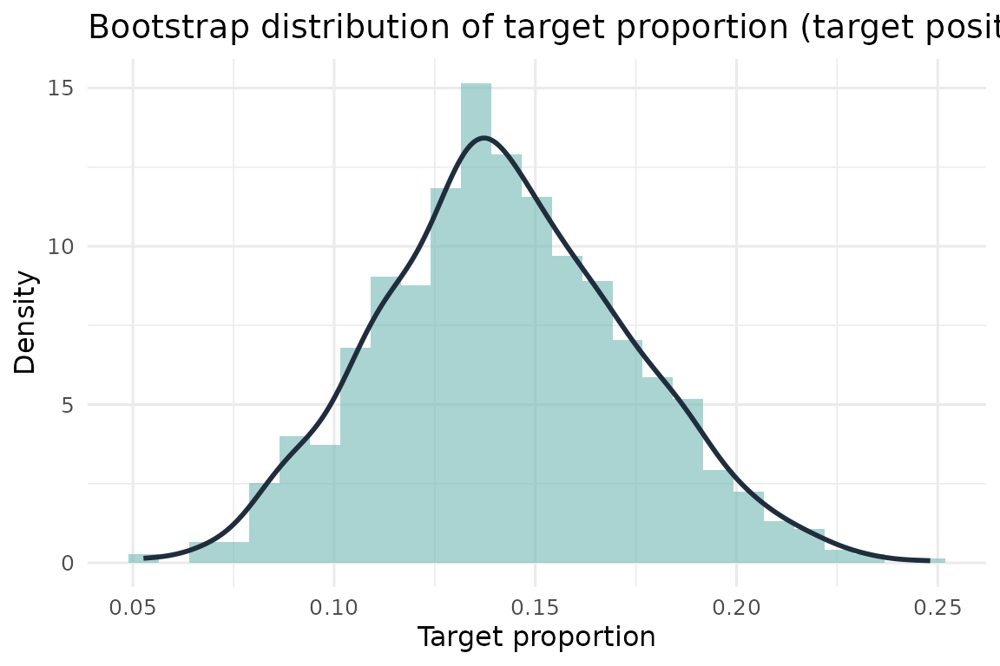
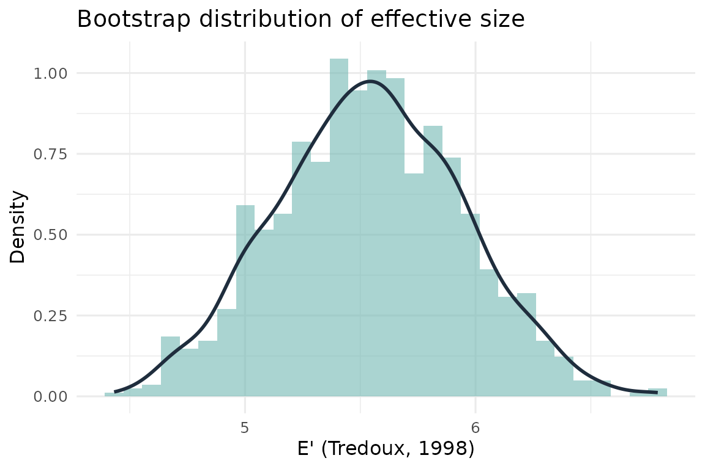
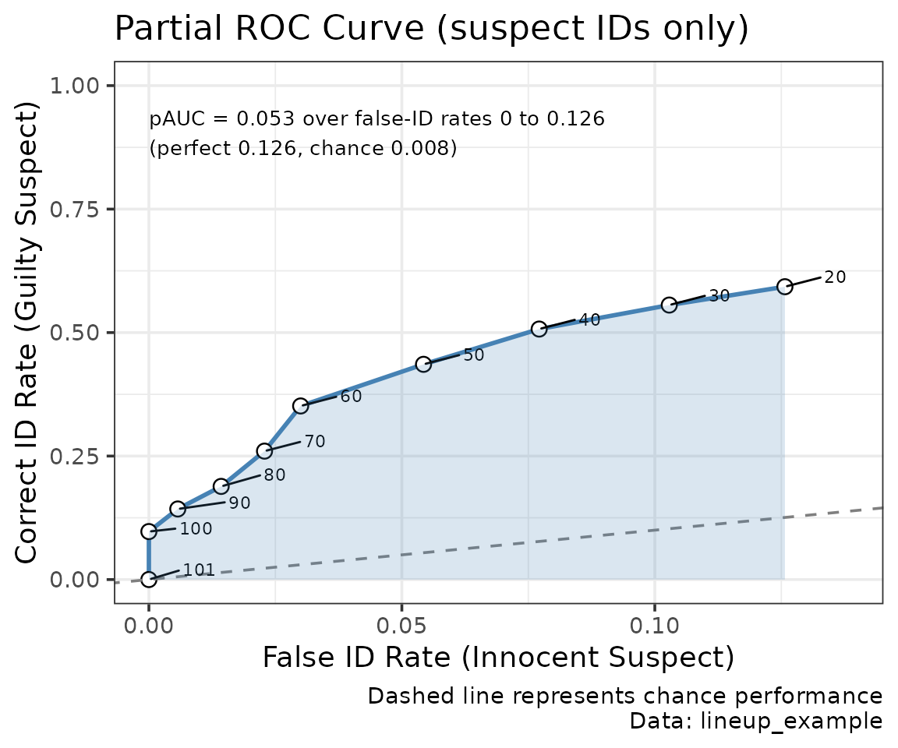
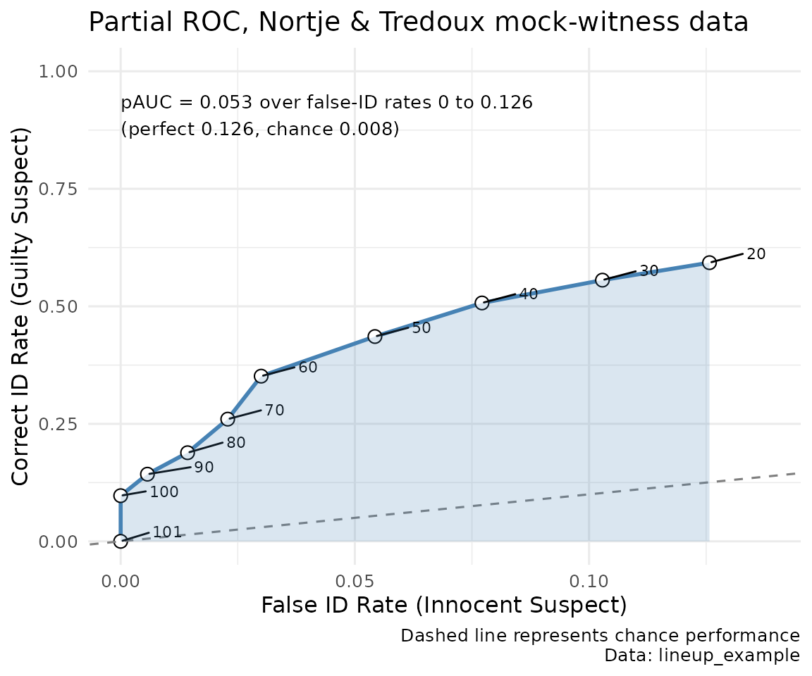
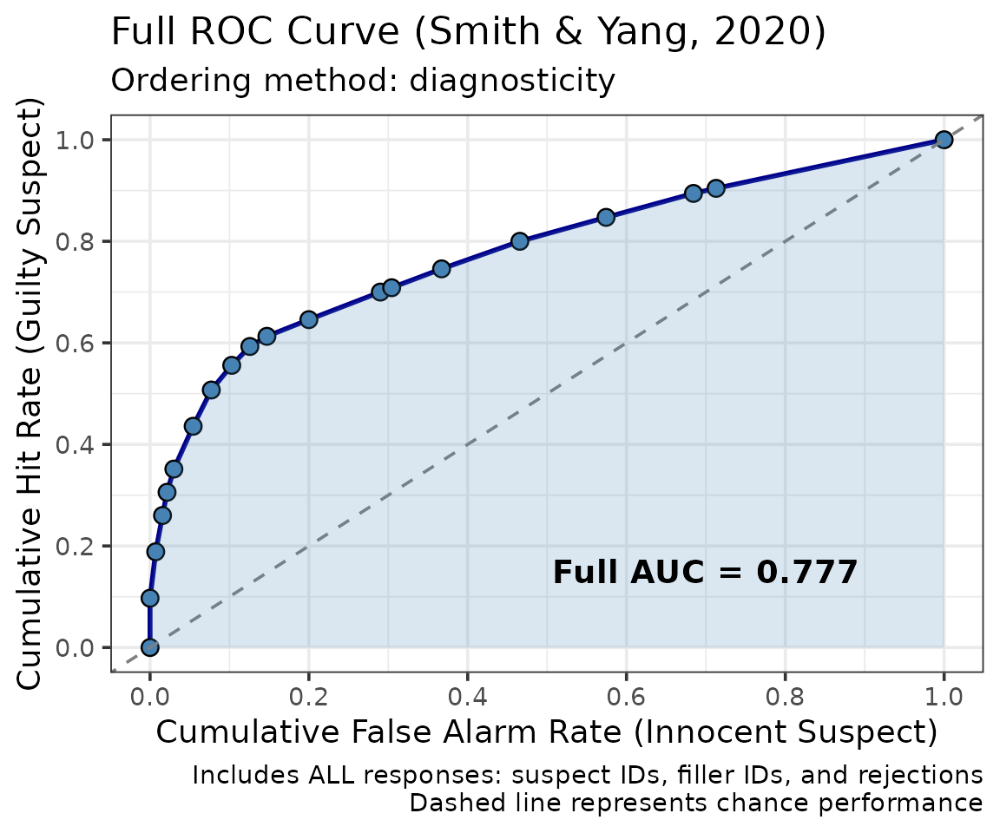

r4lineups MAIN vignette: Statistical Inference on Lineup Fairness
Measures of Lineup Fairness
Colin G. Tredoux
Tamsyn M. Naylor
2026-10-31
Source:vignettes/Vignette.Rmd
Vignette.RmdAcknowledgement. Large language models supplied by Anthropic and OpenAI were used in preparing this vignette, to assist with checking code, testing the veracity of the approaches described, and on occasion editing the text. Responsibility for the content rests with the authors.
The current release is also available from r-universe, which is updated sooner than CRAN:
install.packages("r4lineups",
repos = c("https://cgtza2.r-universe.dev",
"https://cloud.r-project.org"))This is the main vignette for r4lineups. It covers the classical measures of lineup fairness: lineup proportion, functional size, effective size, and the diagnosticity ratio, together with ROC analysis of confidence and accuracy. The package contains a good deal more than this, and the other vignettes are listed at the end of this document.
This package contains functions to compute various properties of laboratory or police lineups. Since the early 1970s eyewitness testimony researchers have recognised the importance of estimating properties such as lineup bias (is the lineup biased against the suspect, leading to a rate of choosing higher than one would expect by chance?), and lineup size (how many reasonable choices are in fact available to the witness? A lineup is supposed to consist of a suspect and a number of additional members, or foils, whom a poor quality witness might mistake for the perpetrator). Lineup measures are descriptive, in the first instance, but since the earliest articles in the literature researchers have recognised the importance of reasoning inferentially about them.
The measures described below were originally proposed by Doob & Kirshenbaum (1973), Wells, Leippe & Ostrom (1979), Malpass (1981), Tredoux (1998, 1999), and Malpass, Tredoux & McQuiston-Surrett (2007). Most of the measures assume that a sample of mock witnesses has been given a description of the perpetrator, and a lineup, and asked to choose someone from the lineup (either as the best match to the description, or the best match to the lineup member the police likely have in mind; see Malpass et al., 2007).
Much of the justification for what follows can be found in Tredoux (1998), and Malpass et al. (2007).
Data Format
The majority of functions in r4lineups require a numeric vector representing lineup data, whilst other functions require you to pass a list of lineup data. It is advisable to read the documentation to determine the format of data needed by each specific function. Most r4lineups functions will not work with a dataframe, even if the dataframe contains only one column, and thus appears to be in vector like format. If your lineup data is in dataframe format already, you can easily convert it to a vector or a list.
For instance, if we have 10 mock witnesses, and each views a lineup with 6 members, then we could record their choices as a numeric vector, where the elements represent the position of the lineup member chosen by each witness:
lineup_vec_demo <- c(3, 2, 5, 6, 1, 3, 3, 5, 6, 4)However, it is also possible to represent this set of choices as a one-dimensional table:
If we had our lineup choices recorded in a data frame, which is what we might end up with if we import the data from a spreadsheet program, then we could easily extract the variable representing choices in the dataframe into a vector.
For instance, if the lineup choices shown above for 10 mock witnesses were part of a larger dataset, and we had recorded the ages and participant number of each participant, then the dataframe might appear as shown below (we create the dataframe with simulated data here, though):
participant_num <- paste("Partic_", 1:10, sep = "")
age <- round(runif(10, 18, 80), 2)
line_df <- data.frame(participant_num, age,
lineup_vec = lineup_vec_demo)
line_df
participant_num age lineup_vec
1 Partic_1 61.32 3
2 Partic_2 52.50 2
3 Partic_3 26.69 5
4 Partic_4 35.71 6
5 Partic_5 52.43 1
6 Partic_6 19.56 3
7 Partic_7 46.91 3
8 Partic_8 71.38 5
9 Partic_9 33.66 6
10 Partic_10 54.01 4Extract the lineup choices, per participant, to a vector:
a_lineup_vec <- line_df$lineup_vecOr make a table directly from the variable of choices:
a_lineup_table <- table(line_df$lineup_vec)Null foils, and why table() can mislead
One important issue is that a lineup vector records the choice each witness made, but not the number of lineup members. If there were in fact 7 members in our running example, but member 7 was chosen by nobody, that would not be evident from the vector at all. Such an unchosen member is called a null foil.
table() makes this worse, because it tabulates only the
positions that were actually chosen and silently omits the rest:
null_foil_vec <- rep(c(5, 3, 2, 1, 8, 6, 7), each = 4)
# Position 4 was never chosen, so this table has 7 entries, not 8
table(null_foil_vec)
null_foil_vec
1 2 3 5 6 7 8
4 4 4 4 4 4 4 Null foils are important, because a foil nobody would pick is not a
functioning alternative to the suspect. They are one of several things
that can make a lineup unfair: poor foils that draw only a few choices
weaken it in the same way, and a suspect who stands out does so whatever
the foils are like. A zero in a sample is also weaker evidence than it
looks. Even in a perfectly fair six-person lineup, a given member
receives no choices from ten mock witnesses with probability
.
Treat an unchosen member as a prompt to look at that photograph, not as
proof that it fails as a foil. Use lineup_table() instead,
which tabulates over all k positions, keeps unchosen
members as explicit zeroes, and says so:
lineup_table(null_foil_vec, k = 8, suspect_pos = 3)
Lineup choices (k = 8, N = 28)
pos: 1 2 3* 4 5 6 7 8
cnt: 4 4 4 0 4 4 4 4
* = nominated suspect
Note: 1 null foil (position 4) received no choices.
Unchosen members reduce effective size; see ?esize_m.The result inherits from table, so it can be passed to
esize_m(), esize_T() and the other
table-taking functions in the package exactly as an ordinary table would
be. The measures in this package already handle null foils correctly
given a complete table; what lineup_table() adds is
visibility.
For the remaining functions, which take a vector rather than a table, nominal lineup size must be passed explicitly as an argument for the same reason.
A larger dataset
Let’s look at a slightly larger data set. Only the first three rows
are shown here; nortje2012 has 133 rows in total.
data(nortje2012)| lineup_1 | lineup_2 | lineup_3 |
|---|---|---|
| 2 | 7 | 1 |
| 5 | 1 | 3 |
| 2 | 2 | 3 |
For functions that require data for only one lineup or one lineup pair, you can convert the data from a given lineup to a vector by calling for e.g.
lineup_vec <- nortje2012$lineup_1or alternativelylineup_vec <- nortje2012[[1]]For functions that require several lineups or several lineup pairs, you can convert the data to a list, e.g.
lineup_list <- as.list(nortje2012)
lineup_vec <- nortje2012$lineup_1
lineup_list <- as.list(nortje2012)
lineup_tab <- lineup_table(lineup_vec, k = 8)lineup_vec and lineup_tab are used
throughout the rest of this vignette.
-
Nominal Size
The notion of ‘Nominal size’ refers to the number of physical members of a lineup. Functions relying on nominal size for accurate calculations require you to manually specify nominal size. If the specified nominal size is not reflected in the dataframe or vector passed to the function, execution of the function is halted with the following error message: “User-declared nominal size does not match observed nominal size. Please check vector of target positions.”
r4lineups Sample Datasets
This package contains several sample datasets, listed below:
-
nortje2012: A dataframe of lineup choices for 3 independent lineups, from a study conducted by Nortje & Tredoux (2012) -
line73: Lineup data from Doob & Kirshenbaum (1973) -
mockdata: Lineup data from a study conducted by Nortje & Tredoux (2012) -
mickwick: Confidence and accuracy data for lineup choices -
lineup_example: Target-present/target-absent identification data, to be passed to the ROC and CAC functions such asmake_roc() - Foil images (used in the face similarity work) can be found at https://github.com/tmnaylor/malpass_foils
Each dataset is loaded by name, e.g. data(nortje2012) or
data(lineup_example). Further details can be found in the
documentation for each dataset, e.g. ?nortje2012.
The package can also generate data.
simulate_lineup_data() simulates target-present and
target-absent lineups with confidence ratings from a signal detection
model, with control over discriminability, decision criterion, lineup
size and the quality of each foil, and returns data in the format the
ROC, CAC and model-fitting functions expect. It is useful for trying out
an analysis before data are collected and for power analysis; see
vignette("simulation_power_analysis").
Lineup Proportion
Proportion refers to the proportion of witnesses selecting a
particular member of a lineup. This package provides calculations of
proportion for individual lineup members
(lineup_prop_vec()), and for all members of a lineup with a
subsidiary function (allprop()).
The calculation of the proportion of mock witnesses choosing the suspect is essentially a measure of lineup bias (see Malpass, 1981; Tredoux, 1998), especially when one tests whether it exceeds the proportion expected by chance guessing alone (1/nominal_size).
The measures in this vignette all rest on mock witnesses, who have
not seen the perpetrator, so they can be used to vet a lineup before it
is shown to a real witness. Bias can also be estimated from the
responses of real witnesses to target-present and target-absent lineups;
such measures are resultant, in that they can only be computed
after an experiment or case. Lee and Penrod (2019) proposed d’(IFa), the
difference between the z-transformed rates at which innocent suspects
and fillers are chosen from target-absent lineups, as such an index of
lineup bias. Because their filler rate pools all the fillers, a
perfectly fair lineup does not give d’(IFa) = 0, and
make_multid() reports the value a fair lineup would give
alongside the observed one. Lee, Mansour and Penrod (2024) found that
resultant measures, including d’(IFa), predicted eyewitness performance
better than mock-witness measures did. The model, its bias indices and
the relevant references are described in
vignette("multid_model").
Calculating proportion for a single target/lineup member
This function requires three arguments: a vector of lineup data (here
lineup_vec, the choices for
nortje2012$lineup_1 that we extracted above), the position
of the target in the lineup (target_pos), and nominal size
(k). The example returns the proportion of mock witnesses
choosing the lineup member occupying position 3, which is 0.14 — that
is, about 14% of the witnesses. Chance expectation for an 8-person
lineup is 1/8 = 0.125, so this member was chosen at close to the chance
rate.
Compute bootstrapped estimates
The original work on lineup bias suggested testing whether the computed proportion = 1/nominal_size using a z test of proportions, or a binomial probability (see Tredoux, 1998), or a confidence interval around the proportion (see Tredoux, 1998), but very few studies actually use enough mock witnesses to strongly warrant this approach, since it assumes approximation to a normal distribution, and the size of the lineup places hard limits that are often not observed by computed confidence intervals.
The bootstrap is a useful alternative for the sampling variability of most lineup measures, especially the nonlinear ones such as effective size. For a single member’s proportion, though, an exact binomial interval is usually the better choice, for the reason shown at the end of this section.
To calculate a bootstrapped lineup proportion for a single lineup
member, we pass the lineup_prop_boot() function as an
argument to the boot() function supplied by the package
boot. We do not work directly with the
lineup_prop_boot function; all we need to know to bootstrap
is the lineup vector, the position of the target
(target_pos), and the number of bootstrap resamples we
desire (R).
bootobject <- boot::boot(lineup_vec, lineup_prop_boot, target_pos = 3, R = 1000)
bootobject
ORDINARY NONPARAMETRIC BOOTSTRAP
Call:
boot::boot(data = lineup_vec, statistic = lineup_prop_boot, R = 1000,
target_pos = 3)
Bootstrap Statistics :
original bias std. error
t1* 0.1428571 -0.0004586466 0.0289372We then compute confidence intervals:
cis <- boot::boot.ci(bootobject, conf = 0.95, type = "bca", target_pos = 3)
cis
BOOTSTRAP CONFIDENCE INTERVAL CALCULATIONS
Based on 1000 bootstrap replicates
CALL :
boot::boot.ci(boot.out = bootobject, conf = 0.95, type = "bca",
target_pos = 3)
Intervals :
Level BCa
95% ( 0.0902, 0.1955 )
Calculations and Intervals on Original ScaleIf you are not familiar with how the boot or the
boot.ci functions work, you could consult the documentation
for the boot package. However, by using the functions
as shown here you will be able to bootstrap without needing to
understand them in detail. Briefly, the argument conf sets
the confidence level, and type specifies the type of
confidence interval to be returned. With type = "bca" the
function returns the bias-corrected and accelerated interval, which is
generally the best-behaved of the options for a statistic like this one.
Other choices include "perc" (percentile),
"norm" (normal approximation) and "basic";
boot.ci will compute several at once if you pass a vector
of types.
Comparing against a normal-theory interval
The bootstrap interval can be compared with the classical interval,
which is what the earlier literature used. There is no r4lineups
function for this, because base R already provides it: a lineup
proportion is just a binomial proportion, so
stats::binom.test() (exact) and
stats::prop.test() (normal approximation with continuity
correction) apply directly.
n_chose_3 <- sum(lineup_vec == 3)
n_total <- length(lineup_vec)
# Exact (Clopper-Pearson) interval
binom.test(n_chose_3, n_total)$conf.int
[1] 0.08825399 0.21406762
attr(,"conf.level")
[1] 0.95
# Normal-theory interval
prop.test(n_chose_3, n_total)$conf.int
[1] 0.09037086 0.21662699
attr(,"conf.level")
[1] 0.95Compare these with the BCa interval above. For a proportion near the middle of its range and a reasonable sample size the three tend to agree closely. They diverge when the proportion is near 0 or 1, or when the sample of mock witnesses is small, and there the ordinary bootstrap is not the safer choice. A resample can only contain choices that occurred in the sample, so a member nobody chose is never chosen in any resample:
never_chosen <- rep(2:6, 6) # 30 mock witnesses; member 1 never chosen
b0 <- boot::boot(never_chosen, lineup_prop_boot, target_pos = 1, R = 1000)
range(b0$t) # every resample gives 0
[1] 0 0
binom.test(0, length(never_chosen))$conf.int
[1] 0.0000000 0.1157033
attr(,"conf.level")
[1] 0.95The percentile interval is
,
which claims certainty that the member is never chosen, and the BCa
interval cannot be computed at all. More resamples do not help, because
the bootstrap cannot generate an outcome the sample lacks. The exact
Clopper–Pearson interval,
here, is the appropriate summary for a member proportion at or near a
boundary, and a Bayesian posterior
(vignette("bayesian_inference")) is another option.
Calculating proportion for each lineup member
Should you want to calculate a proportion for each member of a given
lineup, the allprop() function can be called. This might be
the case when there is no pre-specified suspect in the lineup, as some
researchers do in laboratory experiments. Instead of manually specifying
the target position, a vector indexing all target positions is
automatically generated from the argument k, within the
function itself.
allprop(lineup_vec, k = 8)
prop
1 0.14285714
2 0.13533835
3 0.14285714
4 0.04511278
5 0.28571429
6 0.04511278
7 0.17293233
8 0.03007519The function then returns the proportion of mock witnesses selecting each lineup member.
Compute bootstrapped estimates
We can generate bootstrap estimates for all the computed proportions,
too, with lineup_boot_allprop(). This function takes a
vector of lineup data and the nominal lineup size.
lineuprops_ci <- lineup_boot_allprop(lineup_vec, k = 8, R = 1000)
lineuprops_ci
ci_low ci_high
1 0.082706767 0.19548872
2 0.082706767 0.18796992
3 0.081853490 0.20300752
4 0.015037594 0.08270677
5 0.205667634 0.36090226
6 0.015037594 0.08270677
7 0.112781955 0.24060150
8 0.007518797 0.06015038The object lineuprops_ci is a dataframe of 2 columns and
k rows, in which ci_low and
ci_high contain the lower and upper confidence limits
respectively, and the number of rows equals nominal size.
Note: k = nominal size, and must always be explicitly declared (for more info, see the Data Format section, above).
A caution about inspecting all k intervals at
once. Each of these intervals is computed at the nominal 95%
level individually. No correction is applied for the fact that you are
looking at k of them together, so the chance that at
least one excludes 1/k by accident is appreciably higher than 5%.
If you want a statement about the lineup as a whole rather than about
one nominated member, raise the level for each interval, e.g. a
Bonferroni-style conf = 1 - 0.05 / k:
Visualising the bootstrap distribution
It is often more informative to look at the whole bootstrap
distribution than at its endpoints. lineup_bias_boot_dist()
returns the replicates and plot_lineup_bias_distribution()
draws them:
bias_dist <- lineup_bias_boot_dist(lineup_vec, target_pos = 3, k = 8, R = 1000)
plot_lineup_bias_distribution(bias_dist, target_pos = 3)
Note that a bootstrapped proportion is a count divided by the number
of witnesses, so the replicates can only take values that are multiples
of 1/N. The plot bins at exactly that resolution, giving one bar per
attainable proportion. If you override this with bins or
binwidth, you may see spurious gaps and uneven bar heights,
because some bins will contain no attainable value at all.
Functional Size
We defined nominal size above as the number of physical members of a lineup, but it is clear from experience that not all lineup members are good foils, and some might not end up being chosen at all. They are not good tests of witness memory, in short. Wells et al. (1979) proposed the notion of ‘functional size’ as a measure of the number of plausible lineup members, and defined it as the inverse of the proportion of mock witnesses choosing the suspect.
Functional size =
where is the number of mock witnesses and the number of them who chose the suspect.
You can compute functional size by inverting the result of the
lineup_prop_vec() function, or by calling
func_size(), but we suggest you use the function
func_size_report() which provides more detail, including
bootstrapped confidence intervals.
To compute functional size with confidence intervals, call
func_size_report(), and pass a vector of lineup data, as
well as one scalar indicating target position, and another indicating
nominal size:
func_size_report(lineup_vec, target_pos = 3, k = 8, R = 1000)
Functional size of lineup is 7
Confidence intervals [95%]
Normal Theory 4.921 11.668
Bootstrap: percentile (R = 1000) 4.926 12.091
Bootstrap: bias-corrected (R = 1000) 4.926 12.091
Exact (Clopper-Pearson) 4.671 11.331 Functional size can exceed nominal size. This surprises people, but it follows directly from the definition: if fewer than 1/k of the mock witnesses choose the suspect, the inverse of that proportion is larger than k. You can see it in the output above — the point estimate is below the nominal size of 8, but the upper confidence limits run well past it.
It is not an error, and it does not mean the lineup contains more members than it does. It means the suspect was chosen at below-chance rates, which is informative in itself, but it also shows why functional size is awkward as a measure of “how many usable members are in this lineup”: the measure is unbounded above, while the quantity it is meant to describe is bounded by k. Malpass (1981) and Tredoux (1998) both discuss this, and it is a large part of the motivation for the effective size measures that follow.
Effective Size
The measure of functional size proposed by Wells et al. (1979) does not take the choosing rates of foils other than the suspect into account, and Malpass (1981) thus proposed a measure of the number of plausible lineup foils that takes all the data from a lineup table into account. He called this measure ‘effective size’.
Malpass’ Effective size A =
where is the (observed) number of mock witnesses who choose lineup member i; is the adjusted nominal chance expectation [N(l/)], and is the adjusted nominal number of alternatives in the lineup (original number − number of null foils).
Malpass’ measure of effective size poses problems for statistical inference based on distribution theory, though, as argued by Tredoux (1998). Tredoux instead proposed an alternate measure of effective size, known as E’, derived from earlier work by Agresti and Agresti (1978).
This package allows you to calculate effective size in several different ways.
1. Malpass’s original (1981) and adjusted effective size (see: Tredoux, 1998)
Malpass’ original formula for effective size proposed a denominator computed by entering the number of foils that attracted non-zero choice frequencies. Tredoux (1998) argued against this practice, pointing out that zero frequencies could arise from random guessing with appreciable frequency. He suggested a minor amendment of Malpass’ original formula, as follows.
Malpass’ Effective size B =
Both Malpass measures can be displayed by calling
esize_m() and passing lineup choices (or a table) plus
nominal size. The function always returns the Tredoux-adjusted estimate;
both = TRUE additionally prints the original Malpass
estimate for comparison.
esize_m(lineup_tab, k = 8, both = TRUE)
Effective size (Malpass, 1981) = 5.962406
Effective size (Malpass, 1981,
adj Tredoux, 1998) = 5.962406
[1] 5.962406Every member of lineup_1 was chosen at least once, so
here the two formulations coincide. They come apart as soon as there is
a null foil, which is where the distinction between
and
bites:
# Position 4 was never chosen
esize_m(lineup_table(null_foil_vec, k = 8), k = 8, both = TRUE)
Effective size (Malpass, 1981) = 7
Effective size (Malpass, 1981,
adj Tredoux, 1998) = 7
[1] 7The adjusted estimate deducts the unchosen member. Note that both
figures happen to be 7 in this particular example, but for different
reasons: the adjusted formula starts from k = 8 and deducts the null
foil, while the original formula starts from
= 7 chosen members and finds them perfectly uniform. Using
lineup_table() rather than table() is what
makes the null foil visible in the first place.
Compute bootstrapped estimates (Malpass’s adjusted)
Tredoux (1998) argued that it is better to use the alternate measure of E’, but this was in a time when bootstrapping methods for statistical inference were not widely known, and we therefore include a function that allows you to compute bootstrap estimates of the measures, with confidence intervals.
To do this, one must first generate a bootstrap sample using the
gen_boot_samples() function, then
gen_esize_m(), and then gen_esize_m_ci().
Their usage is shown below.
# Create a dataframe of bootstrapped lineup data
bootdata <- gen_boot_samples(lineup_vec, 1000)
# Calculate effective size for each lineup in bootdata.
# Nominal size is again declared by the user.
lineupsizes <- gen_esize_m(bootdata, k = 8)
# Pass the vector of bootstrapped effective sizes to gen_esize_m_ci
# to calculate lower and upper CIs with the desired level of alpha
gen_esize_m_ci(lineupsizes, perc = .025)
2.5%
5.345865
gen_esize_m_ci(lineupsizes, perc = .975)
97.5%
6.285714 Compute bootstrap descriptive statistics
This function allows you to calculate descriptive statistics for a
bootstrapped vector/df of effective sizes (see the object
lineupsizes, above). We pass this to
gen_boot_propmean_se(). Descriptive statistics are reported
in some detail.
2. Tredoux’s measure of Effective Size, E’
Tredoux (1998) proposed a measure of effective size that is amenable to statistical inference using distribution theory.
E’ = , where I =
and where k, N, and are all as defined earlier.
Substituting for I gives . This is the reciprocal of Simpson’s (1949) concentration index, known in ecology as the inverse Simpson index and in economics as the inverse Herfindahl index, and it can be read as the effective number of members drawing choices: if all k members are chosen equally often, E’ = k, and if one member draws every choice, E’ = 1. The other vignettes use this form; it is the same quantity as Tredoux’s E’.
To compute Tredoux’s measure of effective size, E’, use the function
esize_T(). We can compute confidence intervals around the
measure of E’ using normal distribution theory, and using bootstrap
intervals, with the function esize_T_boot() from
r4lineups, as well as boot() and
boot.ci() from the boot package. Usage is
shown below. Recall that lineup_tab was created near the
start of this vignette with
lineup_table(lineup_vec, k = 8).
# Compute effective size from a lineup table
esize_T(lineup_tab)
[1] 5.693273
# Compute bootstrapped effective size
esize_boot <- boot::boot(lineup_vec, esize_T_boot, R = 1000)
esize_boot
ORDINARY NONPARAMETRIC BOOTSTRAP
Call:
boot::boot(data = lineup_vec, statistic = esize_T_boot, R = 1000)
Bootstrap Statistics :
original bias std. error
t1* 5.693273 -0.1578132 0.4144991When requesting confidence intervals, name the types you actually want:
esize_boot_ci <- boot::boot.ci(esize_boot, type = c("perc", "bca"))
esize_boot_ci
BOOTSTRAP CONFIDENCE INTERVAL CALCULATIONS
Based on 1000 bootstrap replicates
CALL :
boot::boot.ci(boot.out = esize_boot, type = c("perc", "bca"))
Intervals :
Level Percentile BCa
95% ( 4.681, 6.333 ) ( 5.029, 6.589 )
Calculations and Intervals on Original Scale
Some BCa intervals may be unstableCalling boot.ci() without a type argument
asks for all interval types, and produces two warnings that
should be understood rather than ignored:
-
“bootstrap variances needed for studentized intervals”. The
studentized (bootstrap-t) interval needs an estimate of the variance of
the statistic at each bootstrap replicate, which
esize_T_boot()does not return. That interval simply cannot be computed here, and asking for it is what triggers the warning. -
“extreme order statistics used as endpoints”. The requested
percentile falls in the extreme tail of the available replicates, so the
endpoint is being read off the very smallest or largest values, where it
is unstable. The remedy is more replicates (a larger
R), not a different interval type.
These calls demonstrate empirical bootstrap intervals, which have important inferential limits. Do not test exact fairness by checking whether a percentile or BCa interval for plug-in E’ contains nominal size. At N=100 and k=6, the most even possible count vector is (17,17,17,17,16,16), so the largest empirical E’ is 10000/1668 = 5.9952. Every bootstrap value is at most that number: an interval made from its quantiles cannot contain the perfectly fair population value 6. More resamples do not fix this nonregular boundary problem. Normal-theory and corrected-estimator intervals also require separate sampling assessment; none is a universally reliable replacement. Bayesian credible intervals describe the stated posterior and should not be treated as tests of exact equality to k.
You can also look at the whole bootstrap distribution:
esize_dist <- esize_boot_dist(lineup_vec, k = 8, metric = "tredoux", R = 1000)
plot_esize_distribution(esize_dist, metric = "E' (Tredoux, 1998)")
E’ has small-sample bias, downward for fair lineups
The estimator above is a plug-in: sample proportions are substituted for the unknown choice probabilities. The plug-in estimate of the concentration is biased upward. That does not by itself fix the direction of the bias in its reciprocal, E’, because the expectation of a nonlinear function is not the function of the expectation. For fair and near-fair lineups, where the question is usually important, E’ is biased downward. For choices spread evenly over members the bias is approximately
which is not negligible at the sample sizes mock-witness studies typically use. A perfectly fair six-person lineup returns about 5.47 rather than 6 with 50 choices, and about 4.87 with 20:
set.seed(4242)
k <- 6L
bias_demo <- do.call(rbind, lapply(c(20, 50, 100, 500), function(N) {
est <- replicate(2000, {
counts <- tabulate(sample.int(k, N, replace = TRUE), nbins = k)
c(plug_in = esize_T(counts), corrected = esize_T(counts, unbiased = TRUE))
})
data.frame(
`N choices` = N,
`Plug-in E'` = round(mean(est["plug_in", ]), 3),
`Predicted` = round(N * k / (N + k - 1), 3),
`Corrected` = round(mean(est["corrected", ]), 3),
check.names = FALSE
)
}))
knitr::kable(
bias_demo, row.names = FALSE,
caption = "Mean E' from simulated fair six-person lineups, where the true effective size is exactly 6. Simulated data, 2000 replications per row."
)| N choices | Plug-in E’ | Predicted | Corrected |
|---|---|---|---|
| 20 | 4.884 | 4.800 | 6.168 |
| 50 | 5.470 | 5.455 | 6.022 |
| 100 | 5.718 | 5.714 | 6.004 |
| 500 | 5.941 | 5.941 | 6.000 |
The downward bias is not universal. When one member draws most choices it can reverse: for two members chosen with probabilities .9 and .1 and , exact enumeration over all binomial outcomes gives a mean plug-in E′ of 1.230 against a true value of 1.220.
esize_T() accepts unbiased = TRUE, which
replaces the concentration with its unbiased estimator,
,
and reports the reciprocal,
.
The reciprocal of an unbiased estimate is not itself unbiased: the
corrected E′ removes most of the bias for near-fair lineups, as the
table shows, but it is more variable, and in the concentrated two-member
example above it overshoots further (mean 1.269). The default is the
plug-in estimator; the correction is available when wanted:
c(plug_in = esize_T(lineup_tab),
corrected = esize_T(lineup_tab, unbiased = TRUE))
plug_in corrected
5.693273 5.903161 Which to report depends on the question. For describing the choice distribution actually observed, the plug-in value is the quantity of interest. For inference about the lineup that produced those choices, which is the framing of Tredoux (1998), the corrected form usually has less bias when choices are spread across members, at the cost of more variance. Neither is uniformly better. Either way, state which was used.
Getting the choice distribution without mock witnesses
E’ needs a distribution of choices across lineup members, which normally means running a mock-witness study. There is an alternative: target-absent lineups from an identification experiment supply a choice distribution too. Its effective size is a resultant measure of how choices spread in practice, and Fitzgerald, Tredoux and Juncu (2023) use it this way. It is not the same measurement as a mock-witness E′: a witness viewing a target-absent lineup has a memory of the culprit and may reject the lineup, whereas a mock witness chooses from a description, and the two families of measures can disagree (Lee, Mansour & Penrod, 2024).
If your data record which member was chosen, E’ follows directly:
data(lineup_example)
ta <- lineup_example[!lineup_example$target_present, ]
chosen <- ta$lineup_member[ta$lineup_member > 0]
c(plug_in = esize_T(table(factor(chosen, levels = 1:6))),
corrected = esize_T(table(factor(chosen, levels = 1:6)), unbiased = TRUE))
plug_in corrected
4.225584 4.253132 This is the reason the package records lineup_member
rather than only the collapsed identification label: a
dataset that stores just suspect/filler/reject cannot support this
calculation, because it no longer knows which filler was
chosen. Note that the bias above applies here too, and target-absent
choosers are often fewer than mock witnesses would be, so the correction
is more important rather than less.
3. Effective Size Per Foils
Malpass (1981) proposed an additional method for computing effective size, based on the number of foils who are chosen at a rate nearly equal to chance expectation. We propose that ‘nearly equal’ could mean that chance expectation falls within a confidence interval constructed around the proportion of mock witnesses choosing the lineup member.
To calculate effective size by counting the number of foils who fall within the CI for chance guessing, we pass a vector of lineup data, a vector of target positions and nominal size.
Applying this function to our data, we see that effective size for this lineup is 4: four of the eight members were chosen at a rate not distinguishable from chance.
Note that the value returned is a count of members,
not a continuous quantity, so it moves only in whole steps as
conf is varied, and it stays flat across any range of
conf in which no member’s interval crosses 1/k.
The direction of the change with conf can look backwards
at first. A member is counted when its interval
contains chance, that is, when its choice rate cannot
be distinguished from 1/k. A higher conf gives wider
intervals, which makes it harder to show that any member departs from
chance, so more members are counted and the effective size rises. A
higher confidence level is a stricter test of unfairness, and
so a more lenient test of each foil. The same logic means the measure
rises when there are few mock witnesses, because every interval is then
wide: with a small sample, a large count can reflect low power rather
than a fair lineup.
for (conf in c(0.5, 0.7, 0.95, 0.99)) {
cat("conf =", conf, "->",
eff_size_per_foils(lineup_vec, target_pos = seq_len(8), k = 8,
conf = conf, R = 1000), "\n")
}
conf = 0.5 -> 3
conf = 0.7 -> 3
conf = 0.95 -> 4
conf = 0.99 -> 4 As with lineup_boot_allprop(), on which this function is
built, the intervals are not corrected for the fact that k
of them are examined at once.
Comparing two effective sizes
To test if the effective sizes of two independent lineups are
significantly different from one another, we can take the difference
between the effective sizes and calculate confidence intervals. This
function, effsize_compare(), requires a dataframe
containing lineup data for two independent lineups. Here, we create a
new dataframe containing two independent lineups from
nortje2012.
# Get data
linedf <- nortje2012[1:2]
# Compare effective size
effsize_compare(linedf)
The two Effective sizes are 5.693273 4.967425
If the interval includes 0, ns at p = .05
Confidence intervals of difference [95%]
Normal Theory -0.302 1.887
Bootstrap: percentile (R = 1000) -0.4 1.737
Bootstrap: bias-corrected (R = 1000) -0.292 1.836The effective size for lineup_1 is therefore not significantly different from the effective size for lineup_2.
Diagnosticity Ratio
Wells and Lindsay (1980) proposed the use of a ‘diagnosticity ratio’ computed from witness choices in a target present lineup and a target absent lineup (i.e. the ratio of those). Such a ratio could tell us the trade off between hits and false positives, and be used to evaluate modifications to lineup procedures, for instance.
The ratio is P(suspect ID | target present) / P(suspect ID | target absent), which makes it a likelihood ratio in the diagnostic-testing sense; because the two proportions come from independent groups of witnesses it can also be read as a risk ratio.
We can calculate the diagnosticity ratio for a set of identification
parades using either diag_ratio_W() for Wells &
Lindsay’s (1980) formula, or diag_ratio_T() for Wells’
adjusted diagnosticity ratio (see: Tredoux, 1998).
Both functions require the same set of arguments: a vector of lineup choices in which the target was present (TP), a vector of lineup choices in which the target was absent (TA), as well as target positions and nominal size for TP and TA lineups, respectively. These last arguments are specified explicitly.
# Target present & target absent lineup data for 1 lineup pair
TP_lineup <- nortje2012$lineup_1
TA_lineup <- nortje2012$lineup_3
# Compute diagnosticity ratio
diag_ratio_W(TP_lineup, TA_lineup, pos_pres = 3, pos_abs = 7, k1 = 8, k2 = 8)
[1] 6.333333
diag_ratio_T(TP_lineup, TA_lineup, pos_pres = 3, pos_abs = 7, k1 = 8, k2 = 8)
[1] 5.571429We can also calculate the large-sample variance of the log diagnosticity ratio, which is useful for applying some inferential methods:
Note: This variance is on the log-ratio scale, not the raw ratio scale. A delta-method variance on the raw scale multiplies it by the squared ratio. See Tredoux (1998) for the large-sample assumptions.
Differences between Independent Diagnosticity Ratios
We can compare diagnosticity ratios to other diagnosticity ratios, as detailed in Tredoux (1998). He showed a method for computing the equivalence of k diagnosticity ratios, in particular.
Homogeneity using normal theory estimates
The homogeneity function requires the specific parameters used in the estimation of diagnosticity ratio homogeneity. For each lineup pair (TP and TA), we need the natural log of the diagnosticity ratio (referred to here as lnd), its variance (var_lnd), and a weight for each ratio equal to the inverse of its variance (wi). This is used to calculate a pooled estimator (i.e., the mean of the set of diagnosticity ratios). From this, we compute a chi-square deviate with k−1 degrees of freedom, and calculate its significance.
All these calculations are built into homog_diag(), and
so do not need to be calculated separately.
Two different questions. It is important to make a point of clarification here about what this test does and does not tell you, because its output is easy to misread. The chi-square is Cochran’s Q,
which measures how far the k ratios lie from each other (strictly, from their pooled value ). That is a separate question from whether the pooled ratio differs from 1, which is what a confidence interval on addresses:
| Question | Answered by |
|---|---|
| Do these k lineup pairs share a common diagnosticity ratio? | chi-square (Q) and its p value |
| Is the average ratio different from 1, i.e. is there diagnosticity at all? | confidence interval on the pooled ratio |
These can, and often do, disagree — we show a case below where
Q is enormous while the interval on the pooled ratio
comfortably covers 1. When Q is significant, the pooled ratio
is an average of quantities that are not estimating the same thing, and
should not be reported as a single summary. homog_diag()
now prints the per-pair ratios and a note to this effect, so the two
questions do not get conflated.
- For each lineup pair, load data for TP and TA lineups into separate vectors. Then, make a list containing all vectors for TP lineups, and another containing the TA lineups. The positions of each lineup pair should correspond in each list. For example, if the first element of the TP lineup list is TP lineup data for lineup pair 1, then the first element of the TA lineup list should be the TA lineup data for lineup pair 1.
# Target present data:
TP_lineup1 <- rep(1:6, length.out = 100)
TP_lineup2 <- rep(1:5, length.out = 70)
TP_lineup3 <- rep(1:4, length.out = 20)
lineup_pres_list <- list(TP_lineup1, TP_lineup2, TP_lineup3)
# Target absent data:
TA_lineup1 <- rep(6:1, length.out = 100)
TA_lineup2 <- rep(5:1, length.out = 70)
TA_lineup3 <- rep(4:1, length.out = 20)
lineup_abs_list <- list(TA_lineup1, TA_lineup2, TA_lineup3)- Next, the function requires the suspect position for each lineup pair. If the TP and TA suspect positions differ, supply a two-element vector in TP, TA order for that pair. A single position can be supplied for each pair when it is shared by the TP and TA lineups.
pos_list <- c(3, 2, 1)- To ensure the data have been coded accurately, we then specify
nominal size for each lineup pair. The order must correspond with the
positions of each respective lineup in the lineup lists (i.e., if lineup
1 has k = 6, then the first element of vector
k= 6).
k <- c(6, 5, 4)- Finally, we pass the above arguments to
homog_diag(), which assesses the homogeneity of k independent diagnosticity ratios.
homog_diag(lineup_pres_list, lineup_abs_list, pos_list, k)
Diagnosticity ratio for each lineup pair:
pair d 95% CI
1 1.000 [0.54, 1.84]
2 1.000 [0.52, 1.94]
3 1.000 [0.34, 2.93]
Mean diagnosticity ratio: 1
Chi-square estimate (q): 0
Sig: 1
Note: no evidence of heterogeneity (p >= 0.05), so the ratios are
consistent with a common value and the pooled mean is a reasonable summary.These three lineups were built with rep() and are close
to uniform by construction. Every pair has the suspect chosen equally
often whether the target was present or absent, so each d = 1
exactly: the ratios are homogeneous (they agree with one another)
and non-diagnostic (they agree on the value 1). Both questions
get the same answer here, which is why this example cannot show you the
difference between them.
Now a set of ratios that genuinely differ. Each of these three lineup pairs is diagnostic — the suspect is chosen more often when the target is present — but they differ substantially in how diagnostic they are:
# A helper: n1 witnesses choose position 1, the rest spread over positions 2-6
choose_pos1 <- function(n1) c(rep(1, n1), rep(2:6, length.out = 100 - n1))
# Suspect ID rate falls from .60 to .32 across the three TP lineups,
# and rises from .10 to .20 across the three TA lineups
het_pres <- list(choose_pos1(60), choose_pos1(45), choose_pos1(32))
het_abs <- list(choose_pos1(10), choose_pos1(15), choose_pos1(20))
homog_diag(het_pres, het_abs, pos_list = c(1, 1, 1), k = c(6, 6, 6))
Diagnosticity ratio for each lineup pair:
pair d 95% CI
1 6.000 [3.26, 11.04]
2 3.000 [1.79, 5.02]
3 1.600 [0.99, 2.60]
Mean diagnosticity ratio: 2.782997
Chi-square estimate (q): 11.18942
Sig: 0.003717485
Note: the ratios are heterogeneous (p < 0.05), so they do not share a
common diagnosticity ratio. Q measures how far the ratios lie from their
pooled value, which is a different question from whether the pooled ratio
differs from 1. The mean above averages ratios that genuinely differ and
should not be reported as a single summary for these lineups; interpret the
pairs separately.The per-pair table makes the result readable: the ratios are 6.0, 3.0 and 1.6, all pointing the same way but far enough apart that Q = 11.19 on 2 df rejects homogeneity (p = .004). The first two intervals exclude 1 decisively; the third, [0.99, 2.60], only just covers it, so pair 3 is the weakest of the set on its own evidence. The substantive conclusion is that these lineups are not equally diagnostic — the first discriminates guilty from innocent suspects close to four times as sharply as the third — and that is a claim about the pairs, which is only available because we did not stop at the pooled number.
A cautionary case: why you must not pool when Q is significant
Heterogeneity is not always as tidy as that. Consider three pairs whose ratios differ in direction rather than just in degree — one lineup strongly incriminating, one uninformative, and one that points the wrong way (the suspect is chosen more often when the target is absent, which is what a badly biased lineup looks like):
mixed_pres <- list(choose_pos1(60), choose_pos1(30), choose_pos1(20))
mixed_abs <- list(choose_pos1(10), choose_pos1(30), choose_pos1(45))
homog_diag(mixed_pres, mixed_abs, pos_list = c(1, 1, 1), k = c(6, 6, 6))
Diagnosticity ratio for each lineup pair:
pair d 95% CI
1 6.000 [3.26, 11.04]
2 1.000 [0.65, 1.53]
3 0.444 [0.28, 0.70]
Mean diagnosticity ratio: 1.060829
Chi-square estimate (q): 45.62598
Sig: 1.237212e-10
Note: the ratios are heterogeneous (p < 0.05), so they do not share a
common diagnosticity ratio. Q measures how far the ratios lie from their
pooled value, which is a different question from whether the pooled ratio
differs from 1. The mean above averages ratios that genuinely differ and
should not be reported as a single summary for these lineups; interpret the
pairs separately.Here d = 6.00, 1.00 and 0.44. The chi-square is enormous (Q = 45.6, p < .0001), and yet the pooled ratio is 1.06 — barely distinguishable from no diagnosticity at all. Nothing has gone wrong: because is a precision-weighted mean on the log scale, averaging , and lands very close to zero. The ratios cancel.
This is precisely the situation the note in the output is warning about. The pooled figure of 1.06 is not a finding about these lineups; it is an artefact of averaging three quantities that are not estimating a common parameter. Reporting it — or worse, concluding from it that the lineups showed no diagnosticity — would be a serious misreading. Read the per-pair rows instead, which say something quite specific and quite important: pair 1 is strongly diagnostic, pair 2 is uninformative, and pair 3 is diagnostic in the wrong direction.
The order of operations is therefore: look at Q first, and only interpret the pooled ratio if Q gives you no reason to reject a common value.
Homogeneity with bootstrapped confidence intervals
homog_diag_boot() returns bootstrapped estimates of the
homogeneity of k diagnosticity ratios, and takes the same arguments as
homog_diag() (which provides normal theory estimates), plus
R for the number of bootstrap replications. It also
requires suspect positions: they cannot be inferred from the observed
choices.
The percentile interval it reports for the mean is an interval on the pooled ratio, so the same caution applies: interpret it only when the chi-square has not rejected homogeneity.
homog_diag_boot(lineup_pres_list = het_pres,
lineup_abs_list = het_abs,
pos_list = c(1, 1, 1),
k = c(6, 6, 6),
R = 200,
seed = 1)
Diagnosticity ratio for each lineup pair:
pair d 95% CI
1 6.000 [3.26, 11.04]
2 3.000 [1.79, 5.02]
3 1.600 [0.99, 2.60]
Mean diagnosticity ratio is 2.783
Confidence intervals (percentile) 2.059 3.7
Chi-squared estimate is 11.189
Confidence intervals (percentile): 2.601 24.833
Sig (asymptotic, df = 2): 0.003717
Note: the ratios are heterogeneous (p < 0.05), so they do not share a
common diagnosticity ratio. Q measures how far the ratios lie from their
pooled value, which is a different question from whether the pooled ratio
differs from 1. The mean above averages ratios that genuinely differ and
should not be reported as a single summary for these lineups; interpret the
pairs separately.Both routes agree, as they should. Note that the bootstrap interval on the mean, [2.06, 3.70], excludes 1 — the set of lineups is diagnostic on average — while the chi-square still says the three ratios are not interchangeable.
Running the same call on the cautionary data illustrates the problem:
homog_diag_boot(lineup_pres_list = mixed_pres,
lineup_abs_list = mixed_abs,
pos_list = c(1, 1, 1),
k = c(6, 6, 6),
R = 200,
seed = 1)
Diagnosticity ratio for each lineup pair:
pair d 95% CI
1 6.000 [3.26, 11.04]
2 1.000 [0.65, 1.53]
3 0.444 [0.28, 0.70]
Mean diagnosticity ratio is 1.061
Confidence intervals (percentile) 0.827 1.327
Chi-squared estimate is 45.626
Confidence intervals (percentile): 32.879 59.368
Sig (asymptotic, df = 2): 1.237e-10
Note: the ratios are heterogeneous (p < 0.05), so they do not share a
common diagnosticity ratio. Q measures how far the ratios lie from their
pooled value, which is a different question from whether the pooled ratio
differs from 1. The mean above averages ratios that genuinely differ and
should not be reported as a single summary for these lineups; interpret the
pairs separately.The interval on the pooled ratio is [0.83, 1.33] and covers 1, while the chi-square is 45.6 with p < .0001. Read on its own, the interval says “no diagnosticity”; that reading is wrong, and pair 1 (d = 6.0, CI [3.26, 11.04]) shows why. The two statistics are not in conflict, because they are not answering the same question — which is the whole point of checking Q before you look at the pooled interval.
ROC Analysis (Confidence ~ Accuracy)
The make_roc() function allows you to compute and plot
an ROC curve for data from an eyewitness experiment, where accuracy is
recorded for target present and target absent lineups. We follow the
ideas suggested by Mickes, Wixted, and others (see references).
Data format for ROC analysis
The ROC functions require a dataframe with three columns:
target_present (logical), identification
(character: “suspect”, “filler”, or “reject”), and
confidence (numeric).
An important point about study design: the raw data you collect should record which lineup member each witness chose, exactly as in the earlier sections of this vignette. The suspect/filler/reject classification is derived from that choice together with the known position of the suspect — it is not something to record instead of the choice. Keeping the original position lets you compute every measure in this vignette from the same dataset, and lets you re-derive the classification if the suspect position is later corrected.
The derivation is straightforward:
# Raw data as it should be collected: the member chosen (0 = rejected the lineup)
raw <- data.frame(
target_present = c(TRUE, TRUE, TRUE, FALSE, FALSE, FALSE),
chosen_member = c(3, 5, 0, 3, 2, 0),
confidence = c(90, 70, 40, 80, 60, 50)
)
# The suspect occupies position 3 in both the TP and TA lineups
suspect_pos <- 3
raw$identification <- ifelse(raw$chosen_member == 0, "reject",
ifelse(raw$chosen_member == suspect_pos, "suspect",
"filler"))
raw
target_present chosen_member confidence identification
1 TRUE 3 90 suspect
2 TRUE 5 70 filler
3 TRUE 0 40 reject
4 FALSE 3 80 suspect
5 FALSE 2 60 filler
6 FALSE 0 50 rejectThe bundled lineup_example dataset is already in the
derived form. Only the first 8 rows are shown:
| target_present | lineup_member | suspect_pos | identification | confidence |
|---|---|---|---|---|
| FALSE | 2 | 1 | filler | 40 |
| FALSE | 3 | 1 | filler | 50 |
| TRUE | 2 | 1 | filler | 40 |
| TRUE | 1 | 1 | suspect | 80 |
| TRUE | 1 | 1 | suspect | 60 |
| FALSE | 0 | 1 | reject | 20 |
| TRUE | 1 | 1 | suspect | 60 |
| TRUE | 1 | 1 | suspect | 70 |
Computing and plotting the ROC
Each ROC and CAC analysis comes in two forms:
-
make_rocdata(),make_cacdata()andmake_fullroc_data()compute and return the data only. -
make_roc(),make_cac()andmake_fullroc()wrap those, additionally build the plot, and return a classed object with the plot stored in$plot.
Either form can be passed to plot():
roc1 <- make_rocdata(lineup_example, lineup_size = 6)
plot(roc1)
ROC Curve for Confidence ~ Accuracy
Printing the wrapper object gives the numerical summary:
roc_result <- make_roc(lineup_example, lineup_size = 6, show_plot = FALSE)
roc_result
=== Lineup ROC Analysis ===
Partial AUC: 0.053
Target-present trials (N): 700
Target-absent trials (N): 700
Lineup size: 6
Confidence levels: 9
ROC Data:
[38;5;246m# A tibble: 10 × 5
[39m
confidence correct_id_rate false_id_rate n_correct_ids n_false_ids
[3m
[38;5;246m<dbl>
[39m
[23m
[3m
[38;5;246m<dbl>
[39m
[23m
[3m
[38;5;246m<dbl>
[39m
[23m
[3m
[38;5;246m<dbl>
[39m
[23m
[3m
[38;5;246m<dbl>
[39m
[23m
[38;5;250m 1
[39m 101 0 0 0 0
[38;5;250m 2
[39m 100 0.097
[4m1
[24m 0 68 0
[38;5;250m 3
[39m 90 0.143 0.005
[4m7
[24m
[4m1
[24m 100 4
[38;5;250m 4
[39m 80 0.189 0.014
[4m3
[24m 132 10
[38;5;250m 5
[39m 70 0.26 0.022
[4m9
[24m 182 16
[38;5;250m 6
[39m 60 0.351 0.03 246 21
[38;5;250m 7
[39m 50 0.436 0.054
[4m3
[24m 305 38
[38;5;250m 8
[39m 40 0.507 0.077
[4m1
[24m 355 54
[38;5;250m 9
[39m 30 0.556 0.103 389 72
[38;5;250m10
[39m 20 0.593 0.126 415 88
Plot: use plot(x), or save the object and extract x$plotThe pAUC is a partial area, so it is not on the
familiar 0.5-to-1 scale of the full AUC. It covers false-ID rates from 0
up to the largest observed, 0.126 here, so a perfect procedure would
score 0.126 and chance (the diagonal) 0.008. The observed 0.053 is
therefore well above chance. pAUC values are comparable only between
curves integrated over the same false-ID range, which is what
compare_pauc() enforces
(vignette("pauc_statistical_comparison")).
The value returned by plot() is an ordinary
ggplot2 object, so you can adjust it with the usual
+ syntax rather than being limited to the arguments of the
plotting function:
plot(roc1) +
ggplot2::theme_minimal(base_size = 12) +
ggplot2::labs(title = "Partial ROC, Nortje & Tredoux mock-witness data")
Full ROC curves
make_fullroc() implements the Smith, Yang & Wells
(2020) full ROC, which uses all responses — suspect IDs, filler IDs and
rejections — rather than suspect IDs alone. The ordering method is shown
in the plot subtitle, since it materially affects the result:
full_roc1 <- make_fullroc(lineup_example, lineup_size = 6, show_plot = FALSE)
Ordering categories by their sample diagnosticity ratios is optimistically biased: the ordering is estimated from the same data used to compute the AUC. With roughly 700 lineups per arm the bias can be substantial. Use order = "apriori" for inference or between-condition comparisons; see vignette("fullroc_analysis").
plot(full_roc1)
See the Full ROC analysis
vignette for the details, including why order = "apriori"
is preferable for inference.
Similarity of Faces in a Lineup
The face similarity approach included in version 1 of
r4lineups — the interactive face_sim()
function, which prompted for image files and reported factor loadings —
is no longer supported.
It has been superseded by an approach based on modern face
embeddings, which is reproducible from a script rather than a dialog
box. Embedding similarity is a property of the photographs as a
face-recognition model sees them; it is not the same as resemblance
judged by people, nor a measure of lineup fairness, and no validated
cut-off links the two. See the Face
similarity vignette for the current methods, and note that these
require the Python dependencies installed by
install_r4lineups_python().
Technical Details
The measures, and what each assumes
| Measure | Function | Estimand | Key assumption |
|---|---|---|---|
| Lineup proportion | lineup_prop_vec() |
Share of witnesses choosing one member | Binomial; chance value is |
| Functional size | func_size() |
Infinite when nobody chooses the suspect; intervals may also have an infinite upper limit | |
| Effective size (Malpass) | esize_m() |
Number of plausible alternatives, absolute-deviation form | Adjusted version counts all ; original counts only chosen members |
| Effective size E’ | esize_T() |
, the inverse-Simpson index | Plug-in form biased downward at small ; see above |
| Diagnosticity ratio | diag_ratio_T() |
Ratio of suspect-choice rates, target-present against target-absent | The two lineups are independent samples |
Nominal, adjusted and effective size
Three different counts appear throughout and are easily confused.
Nominal size is how many people stand in the lineup. Adjusted nominal size is less the null foils — members nobody chose in this sample, which, as noted above, may include functioning foils that happened to draw no choices. Effective size is an estimate of how many members function as genuine alternatives, and is generally not a whole number.
The distinction is important because most functions here take
as an argument and will not detect that it is wrong.
lineup_table() exists to make null foils visible before
that happens: table() silently omits members with zero
counts, so a lineup of eight with one null foil produces a seven-entry
table and nothing in the output says a member is missing.
Inference
Three routes are available, and they answer slightly different questions:
-
Normal-theory intervals
(
esize_T_ci_n(),prop.test()) are quick and adequate when counts are large and the estimate is away from a boundary. -
Bootstrap intervals (
esize_T_boot()withboot::boot.ci(),lineup_prop_boot()) make no distributional assumption about the transformed statistic, which helps for nonlinear measures such as effective size. They fail at a boundary, though: a member nobody chose gets a interval however many resamples are drawn. For a member proportion near 0 or 1 use the exactbinom.test()interval or a posterior. -
Bayesian posteriors (
esize_T_bayes(),func_size_bayes()) give credible intervals and direct probability statements such as . A threshold at the nominal size is uninformative, because under any continuous posterior. Seevignette("bayesian_inference").
Bounded quantities are the recurring difficulty: E’ cannot exceed and a proportion cannot leave , but a normal-theory interval can and does cross those limits in small samples. That is the main reason to prefer an exact interval, the posterior or, away from a boundary, the bootstrap.
Assumptions common to the fairness measures
- Each mock witness contributes one choice, so the counts partition the sample.
- Choices are independent across witnesses.
- The nominal size passed to the function is the true number of lineup members. Where null foils are present, effective size is the quantity of interest and nominal size overstates the alternatives available.
- Mock-witness measures describe the lineup relative to a
description. A different description can give a different
answer for the same lineup; see
vignette("face_similarity")on what follows from that.
Other vignettes
This vignette covers the classical fairness measures. The package includes a number of others:
- Bayesian inference — Bayesian estimation of lineup fairness measures
- Calibration and decision analysis
- Face similarity — the current, embedding-based approach
- Full ROC analysis — Smith, Yang & Wells (2020) full ROC curves
- Information and error rate analysis
- Lineup memory models — pyWitness model fitting
- Model comparison
- Multiple-source signal detection model
- Multi-d’ model — Lee & Penrod (2019) signal detection indices, including d’(IFa) as a resultant measure of lineup bias
- pAUC statistical comparison
- RAC analysis
- SDT GLM analysis
- SDT summary comparisons
- Simulation and power analysis
- Winter 2HT model
You can also list them from the console with
browseVignettes("r4lineups").